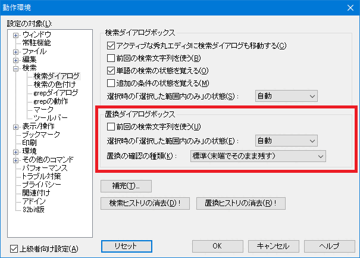

編集中のファイルにいっぱいある、特定の文字(列)を別の文字(列)に置き換えたい時には、秀丸エディタの「置換」機能を使えば簡単にできます。
「置換」とは、
という2つの作業を一度に行う事です。
編集中のファイルにある「over」という文字列を「upper」という文字列に置き換えたいとします。
秀丸エディタの「検索」メニューから(もしくはツールバーやファンクションキーで)「置換」を選択して、以下の様に入力します。
「検索」も「置換」は、通常は1行のみですが、複数行を入力可能にできます。詳細は「補足」を参照してください。

次に適宜オプションを指定するわけですが、各オプションの意味は以下の通りです。
「大文字／小文字の区別」チェックボックス：
検索文字列の大文字と小文字を区別して検索します。この項目がOFFの場合、上の例で「OVER」や「Over」も置換対象になります。
「単語の検索」チェックボックス：
この項目がONになっていると、「Lovers」や「fover」等の、ある語の一部になっている場合は置換対象になりません。ここで言う「単語」とは、半角英字とアンダースコア("_")のみで構成された文字(列)を指します。
「正規表現」チェックボックス：
「正規表現」は「正規表現について」を参照して下さい。
複数行にマッチする検索に関しては制限が存在します。以下のリンク先を参照してください。
「あいまい検索」チェックボックス：
「正規表現」をさらに便利にした「あいまい」な検索が可能になります(全半角同一視等)。
「あいまい検索」は「あいまい検索について」を参照して下さい。
「選択した範囲」チェックボックス：
置換の範囲があらかじめ「範囲選択」された部分に限定されます。
範囲選択されていない時はこの項目を選択できない様になっています。
文書の一部分を選択する「BOX範囲選択」の場合は、「選択した範囲」は有効になりません。
※このオプションの動作の詳細については、[HME0083A]●検索/置換の「選択した範囲」の動作を参照してください。
「次の秀丸エディタも続けて置換」チェックボックス
現在編集中の秀丸エディタウィンドウの他にも秀丸エディタが開いていた場合、その秀丸エディタウィンドウの内容に対しても置換します。
「一周する」チェックボックス
下検索の場合、ファイルの一番下まで検索し終わった場合、ファイルの先頭に戻って検索を続行します。上検索の場合は逆になります。
「追加の条件」チェックボックス
追加の条件に従って検索する範囲を制限できます。
検索の「追加の条件」についてを参照してください。
「検索文字列を強調」チェックボックス
置換実行時、検索に該当する文字列を強調表示します。
「置換の前に確認」チェックボックス
確認ダイアログを表示し、置換する前に本当に置換するかどうかの確認をします。
置換の確認ダイアログは「その他→動作環境→検索→検索ダイアログ」の「置換の確認の種類」で、種類を変更できます。
最後に実行方法を選択する事で「置換」が行われます。
「上検索」(現在のカーソル位置より上にある文字を置換)
「下検索」(現在のカーソル位置より下にある文字を置換)
「全置換」(編集中のファイルの全ての文字を置換)
Ver.8.85より、「全置換」ボタンの「▼」マークから、「クイック全置換」が実行できます。

通常の「全置換」と「クイック全置換」の違いについては、秀丸エディタヘルプの「置換」を参照してください。
簡単に説明しておくと、変換モジュールを使った状態と同じで、対象範囲をまるごと入れ替えるような動作になります。その為、置換した箇所の把握できません。また、カラーマーカーや折りたたみなどは保持されずに破棄されます。正規表現に関しても多少動作の違いがあるようです。要は、エディタ画面上の表示関連の処理を一切省いて、高速に動作させています。
のいずれかを選んで下さい。
検索部分は、検索の「検索文字列の取り込みについて」と同じ事が可能です。
「検索」「置換」部分は、複数行入力に対応しています。「検索」「置換」入力部の横にある▲マークのメニューから「複数行」を選択してください。

「検索」で表示されるメニューは検索ダイアログ と同じです。
「置換」で表示されるメニューは以下になります。

「置換」ダイアログのタイトルバー部分にある「▼」マークを押すと、メニューが表示されます。「検索文字列の追加取得」「検索の動作環境」を開いたり、「検索ダイアログ」に切り替える事も可能です。

「全置換」ボタンですが、設定により機能を変更できます。
ボタン横の「▼」マークを押すことより標示されるメニューの「ボタン形式」から変更できます。
を選択できます。
「置換の前に確認」をチェックすると、確認用ダイアログが表示されます。このダイアログは複数あり、設定により切り替え可能です。
従来のダイアログ

新しいダイアログ(タイプ2)

新しいダイアログ(タイプ3)

以前だと、「一周する」がオフの状態で上検索または下検索を行い、ファイルの上限か下限に達して検索出来なくなると確認ダイアログが消えましたが、現状では「キャンセル」しないと表示されたままになります。 (移動できない方向の検索ボタンは無効化された状態になる)
従来のダイアログでの表示例

これは、例えば「下検索」実行時に、ファイル末尾まで検索した場合、そのまま「上検索」を実行可能にする為です。以前のように、マッチしなくなった場合、ダイアログを消すよう変更できます。 (「置換の確認の種類」を「従来の互換(末端で自動的に消す)」に設定)
置換に関する設定は2箇所あります。各機能に関しては、各ダイアログの「ヘルプ」を参照の事。どちらでも、「置換確認のダイアログ」を選択可能です。
「検索」の「置換の動作」

「上級者向け設定」をチェックすると表示される「検索ダイアログ」の「置換ダイアログボックス」

秀丸エディタ Ver.8.13より、置換時、検索結果に対し、変換モジュールの機能を実行できるようになりました。
これで何ができるかというと、検索でマッチした箇所を大文字/小文字/全角/半角へ変換できます。 (検索でマッチした箇所に、変換モジュールが持つ各種変換を実行できる)
この機能を使用する場合は、「正規表現」 を有効にする必要があります。
標準添付されている変換モジュールの機能は以下になります。
| 関数名 | 機能 |
|---|---|
| ToUpper | UPPER CASE(大文字へ) |
| ToLower | lower case(小文字へ) |
| ToHankaku | ハンカク |
| ToZenkakuHira | 全角ひらがな |
| ToZenkakuKata | 全角カタカナ |
| ToSpace | TAB -> 空白 |
| ToTab | 空白 -> TAB |
| ToHankakuAlnum | 英数字/記号/空白のみ半角に |
| ToZenkakuAlnum | 英数字/記号/空白のみ全角に |
| ToHankakuKataOnly | カタカナのみ半角に |
| ToZenkakuKataOnly | カタカナのみ全角に |
| Indent | インデント |
| UnIndent | 逆インデント |
| Sort | ソート |
置換のエディットボックスに以下のフォーマットで記入すること。
\(タグ番号, 関数名, 変換モジュール名)通常の置換で行う場合は、
置換一回目
検索：hidemaru
置換：HIDEMARU
置換二回目
検索：editor
置換：EDITORのように2回の置換を行う必要があるが、変換モジュールの機能を使えば一回の置換で可能。
検索：(hidemaru|editor)
置換：\(0,ToUpper)
実行前：hidemaru editor
実行後：HIDEMARU EDITOR変換モジュールの機能を組み合わせることも可能で、大文字に変換して、さらに全角へ変換という事もできます。
検索：(hidemaru|editor)
置換：\((0,ToUpper),ToZenkakuAlnum)
実行前：hidemaru editor
実行後：ＨＩＤＥＭＡＲＵ ＥＤＩＴＯＲ詳細はヘルプ置換の時の、変換モジュールによる変換の指定を参照してください。
「検索」は検索と共通ですが、「置換」は単独で設定可能です。
「ヒストリに常駐」の設定方法は、「検索」の「ヒストリに常駐」を参照してください。
複数行の「検索」と「置換」エディットボックスに入力し、検索/置換に指定できる文字列には上限があり、約4000文字が上限となります。
上限を超えると、警告が表示されます。